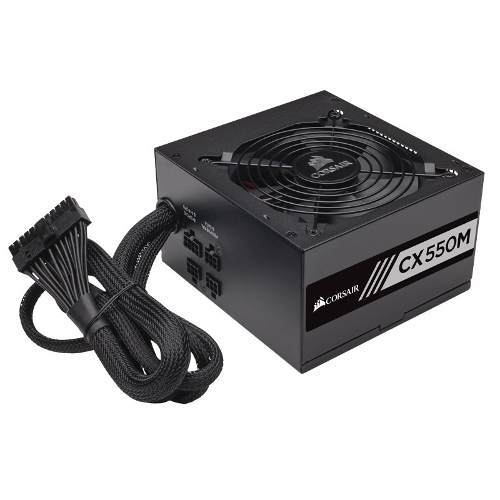
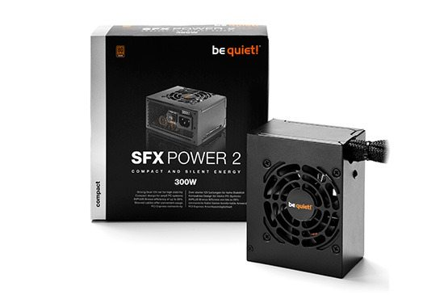
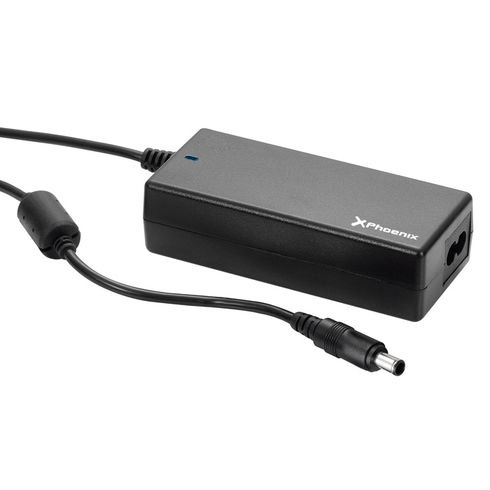

FUENTE DE ALIMENTACIÓN
Tipos de fuentes de alimentación: Estandar y Modular
Dentro de las fuentes de alimentación podemos diferenciar 2 tipos: Las fuentes normales y las modulares.
Las modulares: Se caracterizan por que los cables que alimentan el pc se pueden conectar según nuestras necesidades, es decir, si por ejemplo solo tenemos que alimentar una placa base y un disco duro, pondremos solo dos cables. Si metemos más componentes podemos seguir metiendo más cables. Lo bueno de esto es que primeramente al tener menos cables mejoramos la ventilación de la caja y nos quedan los cables más organizados.
Las fuentes SFX
Las fuentes SFX son similares a las fuentes standard, con la diferencia de que suelen ser más pequeñas, son fuentes que se adaptadan según el tipo de equipo en el que las quieras y con unas dimensiones muy concretas. El tamaño standard de estas fuentes SFX suelen ser por norma general 125 x 100 x 63 mm. La potencia que son capaces de ofrecernos estás fuentes SFX es algo inferior a las fuentes normales debido a las limitaciones que le impone el tamaño al rendimiento de la misma.
Fuentes de alimentación externas
Estas fuentes son las que encontramos en los cargadores de los portátiles y mini pcs. Por norma general estas fuentes suelen ser un bloque de plástico con 2 cables para enchufarlo. Uno que va a la red eléctrica al transformador (fuente) y otro de la fuente al puerto de carga/alimentación.
Estas fuentes carecen de ventilación, anteriormente coméntanos en este mismo post que la ventilación de las fuentes es necesaria. Pero en el caso de las fuentes externas no es necesario ya que normalmente consumen mucha menos corriente que las fuentes de alimentación normales.
Una fuente de alimentación externa consume aproximadamente lo necesario para dar 19v y un amperage bajo.
Para mantener una buena refrigeración pon la fuente de alimentación externa encima de la mesa o en algún sitio sin estar tapada.
En el caso de los mini PCS pasa lo mismo, usan este transformador externo debido a sus pequeñas dimensiones. A pesar de que en el mercado hay algunos equipos de este tipo que sí que tienen la fuente incrustada, sigue siendo del mismo tipo.